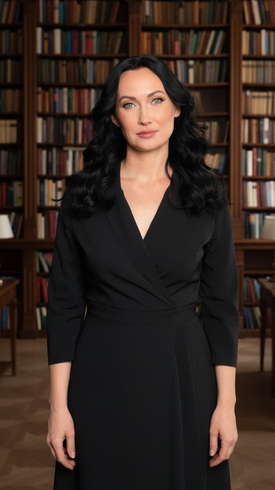
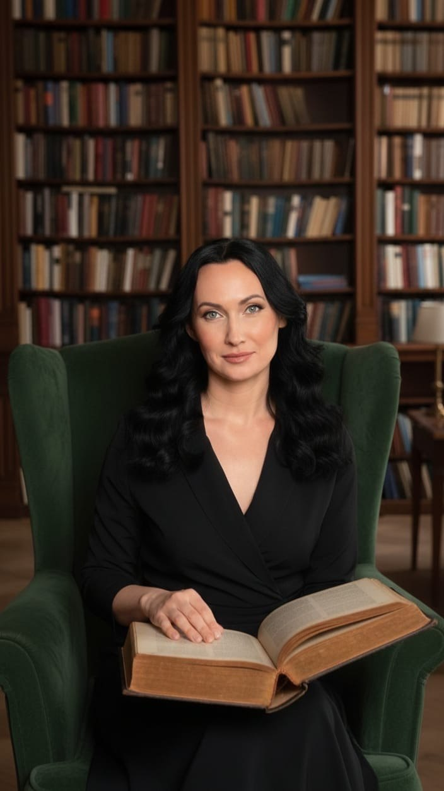

Деньги
Почему доход не растёт, несмотря на усилия?

Консультация ясности
Я соединяю психологию, астрологию и более чем 15‑летний опыт консультирования, чтобы за одну встречу найти причину происходящего и показать самый короткий путь к изменениям.
Получить личную стратегию
Обычно кажется, что проблем десятки.
На самом деле корень почти всегда один.
Во время консультации мы находим именно его.
Почему доход не растёт, несмотря на усилия?
Почему отношения повторяются по одному сценарию?
Почему вы столько умеете, но не понимаете, куда идти дальше?
Почему нет энергии, уверенности и ощущения своей жизни?
Какая бы тема ни привела вас ко мне —
мы будем работать не с последствиями.
Мы найдём настоящую причину.

Почему именно я
Меня знают как астролога.
Но астрология — лишь один из инструментов.
Моя основная профессия — психолог. Более 15 лет я консультирую людей, помогая разобраться не только в событиях их жизни, но и в причинах, которые их создают.
Я вижу внутренние конфликты. Повторяющиеся сценарии. Скрытые ресурсы.
И самое главное — я умею показать, что делать дальше.
Результат
За 60 минут вы получите:
Понимание, почему возникла именно эта ситуация
Ответ, почему прежние способы не работают
Свои сильные стороны и точки роста
Конкретный план дальнейших действий
Без мистики. Без запугивания. Без общих прогнозов.
Только то, что относится лично к вам.
Стоимость консультации 20 000 ₽
Для кого
Тогда эта консультация может стать той самой точкой, после которой всё становится понятнее.
Отзывы
«Наконец поняла, почему всё повторяется. Не совет — а ясность.»Анна, 34
«Ушёл с конкретным планом. Впервые за годы — ощущение, что вижу дорогу.»Дмитрий, 41
«Ожидала астрологию. Получила стратегию. Это другой уровень.»Мария, 29
Именно для этого существует Консультация ясности — глубокое сочетание психологии и астрологии. Не ради предсказаний, а чтобы за одну встречу увидеть корень ситуации, определить ваш ресурс и дать понятный маршрут дальнейших действий.
20 000 ₽ · 60 минут
Получить личную стратегию